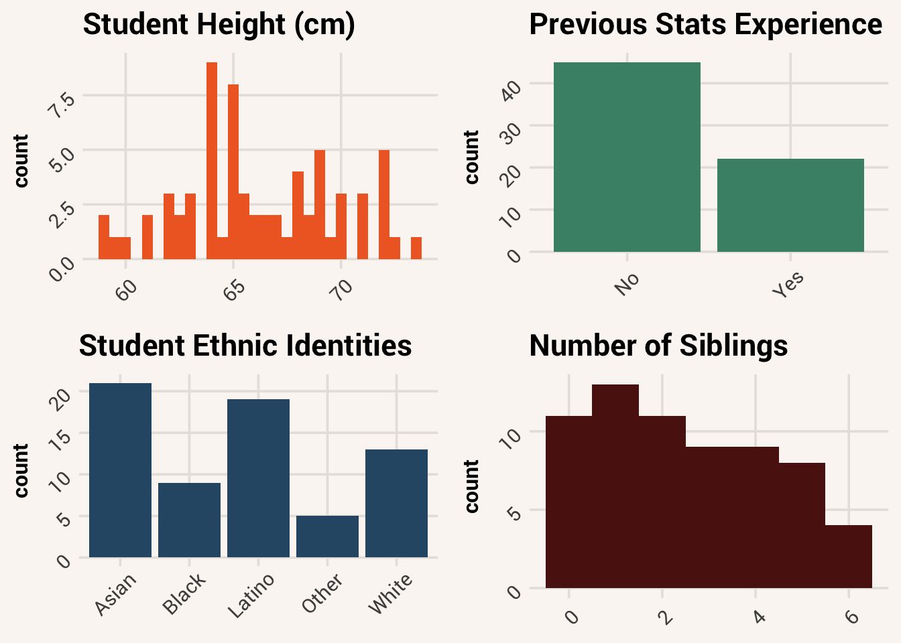
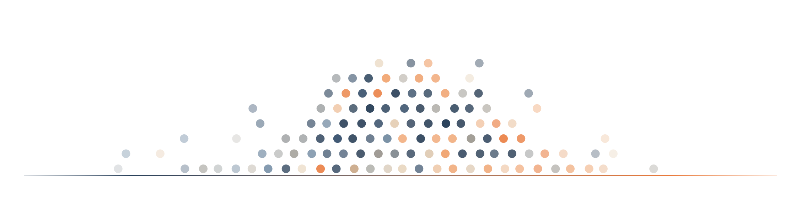
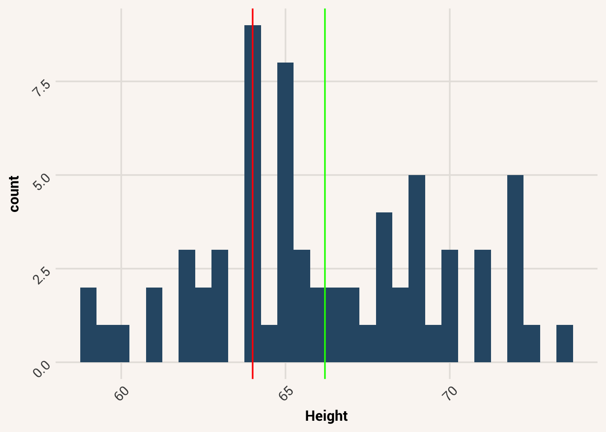
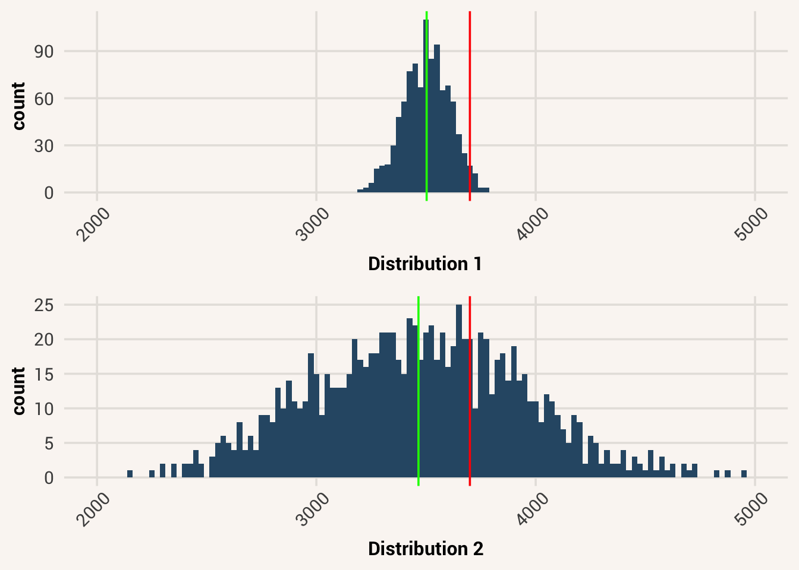

5 Summarizing a Variable

Over the last four chapters you’ve developed the basic proficiency in coding and data management that will enable you to explore and analyze data in many contexts. These skills are an important foundation for the rest of the course, so it is highly recommended that you practice with them and return to them to review frequently (and keep the url of this book handy to come back to in future classes).
Next, we’re going to leverage these skills for making statistical insights about the data we’ve been working with. In this chapter, we will learn about the use of descriptive statistics for summarizing datasets.
descriptive statistics = a set of statistical tools used to describe a data sample
5.1 The concept of a distribution
Assuming we have a tidy data frame with many variables, it is a good idea to look at the variation in your measures. This can give you clues about what kind of cleaning is needed, if any errors in data collection happened, and whether your planned analyses will be appropriate. This leads us to one of the most fundamental concepts in statistics - the concept of a distribution.
distribution = the nature and shape of variation in the collective values of a variable
A distribution is the specific pattern of variation in a variable or set of variables. It is how the data are divided among different possible values. Thinking about distributions requires you to think abstractly, at a higher level, about your data. You must shift your thinking from a focus on the individual observations in your data set (e.g., the 60 people you have sampled) to a focus on all the observations as a group, and the pattern of how they vary. Features about a distribution don’t apply to individual data points - they apply to the whole set.
Note that a distribution only makes sense to talk about if something is distributed. This requires multiple data values and variation, like in a variable. We can talk about the distribution of human intelligence because there is a separate score per person and we would likely measure different values for different people. In contrast, people’s species is not a variable, since by definition all humans are homo sapien. There’s no variation data point to data point, so this would not be a variable and would not have a distribution.
5.2 Visualizing distributions
5.2.1 Histograms
When first learning about variable distributions, it can help to visualize them. Below are some examples of what distributions can look like:
This type of image is called a histogram. On the x-axis is some value that an observation can have on a variable. In the examples above we see (clockwise from upper left): height values among the respondents in studentdata; various employment categories; number of siblings a student may have; and ethnic identities in the student sample. The y-axis represents the frequency of some score in a sample. So, in the first histogram (in orange), the height of the bars does not represent what height someone is, but instead represents the number of respondents in this sample who are the height indicated on the x-axis.
histogram = a type of plot that visualizes a single-variable distribution, with variable values on the x-axis and number of observations with that value on the y-axis
There are lots of ways to make histograms in R. In this book we will use the package ggplot2 to make our visualizations because it is by far the most-used data visualization package in R. It is a large and flexible package, with a lot of capability to make just about any plot customization you can imagine. It takes a little getting used to, so we will just use some of its basic functionality. If you’re really into data viz, you can learn more about the package in the online book ggplot2: Elegant Graphics for Data Analysis (Wickham et al. (2023)).
The process of building a plot with ggplot2 is a process of creating and adding layers to an image, like in Photoshop. The first step of every ggplot2 plot is to define what data should be used in it and the plot’s aesthetic mappings - what variables should go where visually. This is all wrapped in the primary function ggplot().
If you only see a blank plot so far, that’s correct! In the code command above, we told ggplot() to reference the studentdata dataset. We also used the aes() function (short for “aesthetic”) within the ggplot() function to do the aesthetic mapping. In this case, we just told ggplot() to put the variable Height on the x axis. But we didn’t tell the code to do anything with that information yet.
To actually make a plot, we need to next add a “geom” layer. This tells the plotting function what geometric shapes should be on the screen, representing the data we already told it about. To add a layer, we add a plus sign after the ggplot() function and then write a specific function on the next line for the specific type of plot we want to build. In this case, since we want to look at the Height variable in a histogram, we will use geom_histogram().
TipExercise
Try making a histogram of the Siblings variable yourself. It should look like the red histogram in Figure 5.1.
We will learn much more about data visualization ins Chapter 6 and Chapter 7. For now, know that the very first thing you should do when analyzing data is examine the distributions of your variables. If you skip this step, and go directly to the application of other statistical procedures without knowing the distribution of your data, you do so at your own peril. Histograms are a key tool for examining distributions of variables to make sure the data are ok, and that your planned analysis will be appropriate.
5.3 Mathematical notation for distributions
A plot helps us understand a distribution visually. Next, we need to know some specific ways to talk about distributions. Using mathematical notation means choosing some symbols to briefly represent an idea so that it’s more efficient to communicate about it.
There are a few mathematical notations for talking about distributions. First, if we are referring to a variable as a whole group, we will use a Latin letter like \(x\) or \(y\) to stand in for the whole distribution. If we are talking about a specific observation in a variable distribution, we will add a subscript letter to the distribution letter. E.g. if you see \(x_i\), that is referring to the value on \(x\) belonging to observation \(i\).
Why aren’t we using the actual variable name and observation value when talking about them? At first it may seem like using vague \(x\) and \(i\) symbols instead of more descriptive names is worse for communication rather than helpful.
The reason we do this is because these notation symbols stand in for general ideas that go beyond a specific variable or value. This is helpful when we start writing equations in a little bit where the equation would apply to any variable or observation. We could replace the notation with a specific value if we know it. E.g., if we define \(x =\) Sibling and \(i = 5\), then we can solve for \(x_i\): it would be the 5th value in the variable Sibling. But by letting \(x\) and \(x_i\) represent more generally any variable and any observation, we can talk about more general principles of how distributions work and how values can relate to each other.
5.4 Distribution shape
Now, we know how to visualize a distribution and we know how to refer to it generally with mathematical notation. Next, let’s learn some ways we can think about the characteristics of a distribution, and how we can summarize a distribution with specific metrics. In general, there are three important attributes to a distribution: its shape, center, and variation.
Look back at the histogram you made for Siblings, and take note of the general shape the distribution takes. Where is the peak of the the distribution? What are the most infrequent values? Statisticians describe the shapes of distributions using a few key features. Distributions can be symmetrical, or they can be skewed. In a symmetrical distribution, if you drew a vertical line down the middle to split it into two halves, the left side of the shape is close to a mirror image of the right side. If a distribution is skewed, then one half is longer than the other half. Another way of thinking about it is there are more uncommon values on one side of the shape than on the other side. A distribution can be skewed left (the skinny longer tail is on the left, like someone stretched out that side) or skewed right (the skinny longer tail is on the right).
symmetrical distribution = A distribution shaped such that both halves look approximately mirroredskewed distribution = A distribution shaped such that one half of the distribution is more spread out than the other; a lopsided distribution
It’s rare to find a sample of data that is perfectly symmetrical, but the more skewed something is the more we should take note of it. When looking at the distribution of Siblings, we would say it has right skew because the infrequent values are all on the right side of the distribution shape.
Other ways to talk about the shape of distributions include the number of peaks it has. If a distribution has one peak, we call it unimodal. If there are two peaks, it is bimodal. If there are no peaks and it looks like all values on the x-axis have the approximately the same number of occurrences, the distribution is uniform.
unimodal distribution = a distribution with one clear peakbimodal distribution = a distribution with two clear peaksuniform distribution = a distribution with no clear peak and a roughly even number of observations across the range of possible values
Look at your Siblings histogram again. Do you think it is unimodal, bimodal, or uniform?
TipReveal the answer
There is one value that is most frequent and the distribution slopes away from this value to either side - therefor, it is unimodal.
Usually, distributions of collected data are kind of lumpy and jagged, so many of these features should be thought of with the word “roughly” in front of them. Even if a distribution doesn’t have exactly the same number of observations across all possible scores — but has roughly the same number — we should still call that distribution uniform. If you look at the distribution for Height again, it looks like there are many peaks. But statisticians would consider it roughly unimodal because the peak in the middle of the distribution has more mass around it than the others.
5.5 Distribution center
If a distribution is unimodal, it is often useful to notice where the center of the distribution lies. If lots of observations are clustered around the middle, then the value of that middle could be a handy summary of the sample of scores, letting you make statements such as, “Most of the data in this sample are around this middle value.”
We can calculate a specific number to represent what that middle point is for a distribution. We mentioned in Chapter 1 that one of the central principles of statistics is the idea that we can better understand the world by throwing away information, and that’s exactly what we are doing when we describe a variable using its center value. In most situations, after checking out the shape of the distribution, the next thing that you’ll want to calculate is a measure of central tendency. That is, you’d like to know something about where the “average” or “typical” value of your data lies. The three most commonly used measures are the mean, median, and mode.
central tendency = the “middle” or “typical” value of a distribution, close to where most points are
5.5.1 Mean
The mean of a set of observations is a traditional average: add all of the values up, and then divide by the total number of values. If a student took five exams and got scores 76, 91, 86, 80 and 92, the mean of those scores would be:
mean = a measure of central tendency calculated by summing all values and dividing by the number of values
\[\frac{76 + 91 + 86 + 80 + 93}{5} = 85.2\]
To calculate the mean in R, you could type out that exact formula above and have R work for you like a calculator: (76 + 91 + 86 + 80 + 93)/5. However, that’s not the only way to do the calculation, and when the number of observations starts to become large, it’s very tedious. Besides, in almost every real world scenario, you’ve already got the actual numbers stored in a variable of some kind, like test_scores <- c(76,91,86,80,93). Under those circumstances, you can use a combination of the sum() function and the length() function:
Although it’s pretty easy to calculate the mean like this, we can do it in an even easier way. Since the mean is such a common metric to compute, R also provides us with the mean() function. Simply pass a vector to this function to return the mean. Try it in the code block below.
TipExercise
Use mean() to calculate the mean of test_scores in the code window below.
The mean is a really useful and common way to describe a distribution’s central tendency. It’s so common, that it has it’s own mathematical notation: \(\bar{x}\), which is read as “x bar.” Where \(x\) stands for the distribution of some variable, \(\bar{x}\) stands for the corresponding mean of that distribution. Since we calculated the mean of test_scores to be 85.2, we’d say \(\bar{x}\) = 85.2 where \(x\) is defined as test_scores.
5.5.2 Median
Despite its ubiquity, the mean is not always a good fit for all situations. Imagine two distributions: dist1 <- c(10, 10, 11, 9, 11, 12, 8, 9, 10) and dist2 <- c(10, 10, 11, 9, 11, 12, 8, 9, 10, 100). Plot these as histograms below.
TipExercise
Write code to plot the density plot of the provided distributions using ggplot() and geom_histogram().
While dist2 has an obvious outlier, most people would say a value that best represents the majority of the data is still around 10, like in dist1. However, the mean is a different story:
TipExercise
Now calculate the mean of each distribution.
The mean of dist2 is way off of the mean of dist1. This sort of situation is not uncommon - in fact, the mean of any distribution with appreciable skew will move towards the long tail rather than the peak of the rest of the data.
The mean has some desirable mathematical properties that we’ll return to later. But as far as it corresponds to our intrinsic sense of what is the “middle” value, it doesn’t always match. In this case, a better measure of central tendency can be the median.
median = a measure of central tendency calculated by finding the middle value if all values were ordered smallest to largest
The median is even easier to describe than the mean. The median of a set of observations is just the middle value, when the values are sorted in numerical order. As before, let’s imagine we were interested in a student’s five test scores. To figure out the median, we sort these numbers into ascending order, 76,80,86,91,93. The value in the middle, bolded here, is the median.
It’s easy to find the middle value in a set of numbers that are an odd-numbered length. But what should we do if test_scores had 6 values instead? E.g., 76,80,86,91,93,94. Now there are two middle numbers, 86 and 91. In this case, the median is defined as the average of these middle scores: 88.5.
As before, it’s tedious to calculate this by hand when you’ve got lots of numbers. Luckily in R, we have the median() function:
Warning
Summary functions like mean() and median() are some of the functions in R that break with NA values. To make it skip over them, add the argument na.rm=TRUE. This turns a setting “should I remove NA values?” to TRUE.
5.5.3 Mode
The last common measure of central tendency is the mode. This is the most frequent value within the distribution - what we’ve been calling the “peak” of a distribution. In a somewhat symmetrical distribution, this is near the middle of the distribution with the mean and median. But in a really weird distribution, where, say, the most extreme values are the most common, the mode could be very different than the other metrics.
mode = a measure of central tendency calculated by finding the most frequent value
TipExercise
Try the calculate the mean, median, and mode of the new distribution dist3.
You may have tried to use a function like mode() in the code block above to calculate the mode of the variable data_pts. However, in R mode() is taken by a different function that does something else. So we’ll need a different method to describe our distribution. Given that the mode is the most frequent data value in a distribution, we can use the table() function to list the number of data points with each unique value, and identify the mode that way:
Because the mode can be far away from the middle in distributions like this, it may be better to think of the mode as more of a measure of “typicality” rather than a measure of “central tendency.”
5.5.4 Which measure of central tendency to use?
When do you pick between mean, median, and mode to describe a distribution? There’s no hard and fast rule - for each use case, you’ll want to think about the message you’re trying to send with your summary, as well as the nature of the underlying data. But here are some things to think about when making your decision:
- The mean is a good default - many statistical tools are based on the mean, and lots of people know what it is.
- As already mentioned, if you have a highly skewed distribution, median may be better than mean for describing the middle of the data.
- If your data are categorical, it doesn’t make sense to calculate the mean or the median. Both the mean and the median rely on the idea that the numbers assigned to values are meaningful - i.e., can you say what the mean is of {apple, orange, banana, watermelon}? If data values aren’t related numerically, use the mode.
- If your data are whole number counts, you’re more likely to want to use the median than the mean. For instance, when measuring the typical number of children that an American household has, you can only have whole-numbered children. However, if we calculate the average child number per family in 2020, we get 1.93. A partial amount of a child doesn’t really make sense when discussing the typical number of children one might find in a household. Instead, it would make more sense to use the median: 2.
5.6 Distribution spread
Lastly we come to variation. Variation refers to how spread out (or wide) the distribution is. Central tendency tells us what the middle/most typical values are, but we don’t want to completely ignore the other scores. Two distributions can have a mean of 60, but if the range of one is 50 to 70 while the range of another is 2 to 200, those are obviously different distributions of data. There are also multiple measures available to give a specific value for a distribution’s variation.
5.6.1 Range
The range of a variable is very simple: it’s the maximum value minus the minimum value. For test_scores data, the maximum value is 93, and the minimum value is 76. We can calculate these values in R using the max() and min() functions.
range = a measure of variation calculated by identifying the difference between the minimum and maximum values
TipExercise
Use min() and max() to calculate the range of test_scores by subtracting the min from the max.
The other possibility is to use the range() function, which outputs both the minimum value and the maximum value in a vector, like this:
Although the range is the simplest way to quantify the notion of variation, it’s one of the worst. Recall from our discussion of the mean and median that we want our summary measure to be robust (meaning it isn’t affected by outliers very much). If the distribution has one or two extreme values in it, we’d usually like our summary of the whole not to be unduly influenced by these cases. If we look once again at our toy example of a data set containing a very extreme outlier, dist2 <- c(10, 10, 11, 9, 11, 12, 8, 9, 10, 100), it is clear that the range is not robust, since this has a range of 92 unless the outlier were removed; then we would have a range of only 4.
5.6.2 Interquartile range
The interquartile range (IQR) is like the range, but instead of calculating the difference between the biggest and smallest value, it calculates the difference between the 25th percentile and the 75th percentile values (i.e., splitting the data into four buckets/“quartiles”). In fact, we’ve already come across the idea: the median of a data set is its 50th percentile!
interquartile range (IQR) = a measure of variation calculated by finding the 25th and 75th percentile values
The simplest way to think about IQR is that it contains the “middle half” of the data. That is, one quarter of the data falls below the 25th quartile, one quarter of the data is above the 75th quartile, leaving the “middle half” of the data lying in between the two. The IQR is the range covered by that middle half.
R provides you with a way of calculating percentiles, using the quantile() function. Let’s use it to calculate the median of Height in the studentdata dataset:
Not surprisingly, the 50% percentile and the median agree. Now, we can actually input lots of percentiles at once, by specifying a vector for the probs argument. So lets do that, and get the 25th and 75th percentile:
Since the IQR is the 75th percentile minus the 25th percentile, our IQR is 69 - 64 = 5. As you might have suspected by now, R also gives us a way to calculate the IQR directly:
Making life even easier, we can get the mean, median, range, and IQR of a distribution all at once using the summary() function.
TipExercise
Use summary() on studentdata$Height. Can you recognize all the returned values?
5.6.3 Sum of squares
The two measures we’ve looked at so far, the range and the interquartile range, both rely on the idea that we can measure the spread of the data by looking at the percentiles of the data. However, this isn’t the only way to think about the problem. A different approach is to select a meaningful reference point (usually the mean or the median) and then report how much all the data points deviate from that reference point. If there’s a lot of deviation, that means many points are far away from the middle and thus our distribution is spread out. If there’s not much deviation, most data points are clumped closely around the middle.
Computing this is a multi-step process. Let’s think about our test_scores data, c(76,91,86,80,93). Since our calculations rely on an examination of the deviation from some reference point (in this example let’s use the mean), the first thing we need to calculate is that reference point (the mean). For the five observations of test_scores, our mean is \(\bar{x} = 85.2\), as we saw before.
The next step is to convert each of our observations into a deviation score. That means calculating the difference between each score, \(x_i\), and the mean \(\bar{x}\). That is, the deviation score is defined as:
\[x_i - \bar{x} \tag{5.1}\]
For the first observation in our sample, this is equal to 76 - 85.2 = -9.2. By repeating this calculation for each data point in a sample, we know how far away each data point is from the sample mean.
| Which score | Value | Deviation from mean |
|---|---|---|
| 1 | 76 | -9.2 |
| 2 | 91 | 5.8 |
| 3 | 86 | 0.8 |
| 4 | 80 | -5.2 |
| 5 | 93 | 7.8 |
Now that we have calculated the absolute deviation score for every observation in the distribution, we could sum these up to say “here is the total amount of deviation in this distribution.”
Uh oh, there seems to be a problem. Our sum of deviations is practically 0 (-1.42e-14 is a really, really small number!). Surely there is more deviation in our distribution than that?
The reason this happened is because some data points are above the mean (a positive difference score), and some are below the mean (a negative difference score). When you sum up positive and negative numbers, they cancel each other out.
One way to get around this is to square every difference score:
\[(x_i - \bar{x})^2 \tag{5.2}\]
This gets rid of negative numbers and allows us to calculate the total amount of deviation in a distribution more effectively. This calculation is called the sum of squares. Statisticians often use squaring instead of something like the absolute value to get rid of negative values for reasons that are beyond the scope of this course, but you can read about it if you like1.
sum of squares = a measure of variation calculated by summing the squares of all data points’ deviations from the mean
Here’s the formula for sum of squares:
\[SS(x) = \sum_{i=1}^{n}(x_i-\bar{x})^2 \tag{5.3}\]
To read this equation and remember it, break it down into the pieces we’ve talked about already. We have our difference equation in there, squared to remove negatives. We could find this squared difference for any data value \(x_i\) in a variable \(x\), so to get one number for the whole distribution we find the sum of all differences across all observations \(i\) from the 1st to the nth: hence \(\sum_{i=1}^{n}\). This equation tells us to find the sum of all squared differences in the variable. Hence the name!
There’s a neat fact about the relationship between the mean and the sum of squares. The mean, \(\bar{x}\) is the value that most minimizes the sum of squared deviations for a variable. If we put any other number in place of \(\bar{x}\) in the sum of squares equation, like the median or mode, the sum of squares would be bigger. This is one of the reasons why the mean is such a common measure of central tendency despite its conceptual limitations - it vibes well with other statistical tools we may want to use.
5.6.4 Variance
Sum of squares represents the total amount of deviation from the mean that all the points in a distribution have. We squared the deviations before adding them together, which helped us deal with the summing-to-zero problem. However, we still have another issue. Say we want to compare the variation scores for two datasets, one with 10 observations and one with 100. In the 10-observation dataset, the values all deviate from their mean by 1. In the 100-observation dataset, the values all differ from their mean by 0.5. We would think the bigger dataset has less spread because of this. But if we use the sum of squares equation, 100*(0.5)^2 is bigger than 10*(1)^2. Sum of squares goes up as a function of dataset size, not just data variation.
This is why it’s also good to represent the amount of deviation in a distribution relative to how many data points are in it. This is a metric called the variance2 . Variance is commonly given the short hand mathematical notations of \(var(x)\) or \(s^2\) (the reason for the second one will become clearer shortly). The formula that we use to calculate the variance of a set of observations is as follows:
variance = a measure of variation calculated by dividing the sum of squares by n-1
\[s^2 = \frac{1}{n-1}\sum_{i=1}^{n}(x_i-\bar{x})^2 \tag{5.4}\]
It is very similar to the equation for sum of squares, except for one change. We take the sum of squares, and then divide the whole thing by n-1.
Note
It may seem strange that we’re dividing by n-1 instead of n like in an average calculation. The reason for this is a bit nuanced and will be covered in ?sec-ch15, so for now just take it on faith that this is correct.
Calculating variance in R is really simple, since there is a built in function for the whole process: var().
Now, what does the variance actually mean? This one is a little weird to interpret. It has some elegant mathematical properties that help a lot for deriving other statistical tools, but by itself it is not very helpful if you want to communicate about variation with another human. This is because variance is uninterpretable in terms of the original variable (this is true of sum of squares also). All the numbers have been squared so they don’t have meaningful units anymore. Because of this, we usually don’t interpret the number directly - we look at a ratio of different variances to see percent change, or we use it to calculate more interpretable quantities. For instance…
5.6.5 Standard deviation
Since squaring the deviations is what took us away from the units of the variable originally, we could take the square root of the variance to get back to them. This is known as the standard deviation. While a variance of 13.07 inches-squared is weird to think about, it’s much easier to understand a standard deviation of 3.61 inches, since it’s expressed in the original units. Interpret it as the typical amount of deviation you expect any randomly-chosen data point to have from the sample mean.
standard deviation = a measure of variation calculated by taking the square root of the variance
The mathematical notation for standard deviation is \(s\), though “sd” and “std dev” are also used at times as abbreviations of the term. Because the standard deviation is equal to the square root of the variance, you probably won’t be surprised to see that the formula is:
\[s = \sqrt{\frac{1}{n-1}\sum_{i=1}^{n}(x_i-\bar{x})^2} \tag{5.5}\]
This just puts a square root operation around the variance equation (which just divides the sum of squares equation by n-1 - it’s all connected!). The R function to calculate standard deviation is sd().
TipExercise
Find the standard deviation of studentdata$Height using sd(), and verify that it produces the same result as the square root of var().
5.6.6 Which measure of variability to use?
We’ve discussed quite a few measures of spread (range, IQR, sum of squares, variance, and standard deviation), and hinted at their strengths and weaknesses. Here’s a quick summary:
- Range: Gives you the full spread of the data. It’s very vulnerable to outliers, and as a consequence it isn’t often used unless you have good reasons to talk about the extremes in the data.
- Interquartile range: Tells you how wide the “middle half” of the data is. It’s pretty robust, and complements the median nicely.
- Sum of squares: Tells you the total amount of squared deviations in a distribution. Rarely used to summarize a distribution by itself, but serves as the basis of other statistical tools.
- Variance: Tells you the average squared deviation from the mean. Similarly to sum of squares, it’s mathematically useful but infrequently used as a standalone summary statistic.
- Standard deviation: Square root of the variance. It’s fairly elegant mathematically, and it’s expressed in the same units as the data so it can be interpreted well. In situations where the mean is the measure of central tendency, this is the most popular measure of spread.
5.7 Summarizing non-numeric data
As you’ve probably noticed, the methods we’ve learned for describing a distributions are equations. We’ve mentioned a few times now that most statistical tools work this way and thus need quantitative data to operate. Thus, in order to summarize categorical data, we first need to turn them into numbers - we need to quantify them.
Let’s start with a simple quantification problem first - a variable with only two categories. We have one like this in our studentdata dataset, Sex3. This variable has two values to start with - Male and Female. In Chapter 2 we learned about a data type in R that is specifically for variables with only two values - Boolean data. So we can simply convert the Sex variable from character to Boolean.
TipExercise
Make a new variable in studentdata called Sex_bool, where observations are TRUE if the original value is Female and FALSE if the original value is Male.
TipReveal the answer
There are multiple ways you could do this, such as with a logic statement studentdata$Sex_bool <- studentdata$Sex == "Female" or recoding with studentdata$Sex_bool <- dplyr::recode_values(studentdata$Sex, from = c("Male", "Female"), to = c(FALSE, TRUE)).
A neat thing about Boolean data is that the computer actually treats a value of TRUE as 1 and a value of FALSE as 0 (this is the basis of computer binary code - 0s and 1s are just logic gates). So now that we have Sex_bool as a Boolean variable, we can perform math computations on it!
Turning binary categorical data into Boolean data is quite common in statistics, and is called making a dummy variable. The mean of a dummy variable is the proportion of observations that are TRUE, and the variance and standard deviation are measures of how much variation there is in the distribution of TRUE and FALSE values.
dummy variable = quantification of a binary categorical variable, such that one category is set to 1 and the other to 0
Note that these values being the mean and standard deviation of Boolean/binary data does not mean these values actually exist in the dataset (indeed, since they’re not 0 or 1, they cannot). It is more natural to think of the mean of a Boolean variable as the proportion of the variable that equals TRUE. The notation for proportion is traditionally \(p\), but just keep in mind for later that \(p = \bar{x}\) when \(x\) is binary. The variance and standard deviation of Boolean data don’t have a straightforward interpretation, but they will approach a max of \(s^2 = 0.25\) (\(s = 0.5\)) when the distribution is evenly split between TRUE and FALSE and will be 0 when the distribution is all TRUE or all FALSE (i.e., no variation).
proportion = number of “successes” in a set divided by the total number of items in the set
Now let’s consider a more complex categorical variable like Ethnicity.
TipExercise
Try to remember a function we learned about in this chapter to show which values are in this variable and how many observations are in each category. If you forgot, re-read Section 5.5 before peaking at the answer.
TipReveal the answer
table() is good for this.
Because there are more than two categories in Ethnicity, we can’t turn it into Boolean data… or can we?
Recall that Boolean data are the answer to a logical question, like “is this person female?” There’s no reason we couldn’t pose a similar logical question of this variable, such as “is this person Asian?” The answer to such a question will be TRUE for everyone who answered Asian and FALSE for everyone else. Leaving the variable like this means we lose information about how people answered if they did not select Asian on the survey. But we could ask successive logical questions about the other categories, effectively making multiple Boolean variables. We can then take the sum of the variances across all these dummy variables to get an index of qualitative variation (IQV) for the whole multilevel variable4. Along with the mode for central tendency, this is how we would use quantification to describe non-numeric data.
index of qualitative variation (IQV) = a measure of variation in a multilevel categorical variable, calculated as the sum of the variances for each of the variable’s corresponding dummy variables
TipOptional: going deeper
You may read elsewhere that the equation for the variance of a binary variable is \(np(1-p)/(n-1)\). This is derivable from the sum of squares Equation 5.3 we gave above. Since \(p = \bar{x}\), we can write Equation 5.3 as
\[\sum_{i=1}^{n}(x_i-p)^2\]
Because \(x_i\) in a binary variable can only be 0 or 1, the deviation part of the equation can only ever be \((1-p)^2\) or \((0-p)^2 = p^2\). If we let \(m\) equal the number of 1s and \(n-m\) equal the number of 0s, we can break down the sum to get:
\[m(1-p)^2 + (n-m)p^2\]
Now, we replace \(m\) with \(np\), since a count of 1s is the product of the proportion of 1s and the total sample size.
\[np(1-p)^2 + n(1-p)p^2\] Factor out \(np(1-p)\):
\[np(1-p)(1-p + p)\]
\(1-p + p\) is simply 1, so for the sum of squares of a binary variable we are left with:
\[np(1-p)\]
To get to variance of this variable, like we saw with getting variance out of the sum of squares for a numeric variable, we divide by \(n-1\):
\[s^2 = \frac{np(1-p)}{n-1}\]
To derive a generalized equation for a multilevel categorical variable, suppose there are \(k\) categories and \(p_j\) stands for the proportion of 1s in the jth dummy variable. Summing up the variances for each dummy variable gives us:
\[\sum_{j=1}^{k} s_j^2 = \frac{n}{n-1} \sum_{j=1}^{k} p_j(1-p_j) = \frac{n}{n-1} (1 - \sum_{j=1}^{k} p_j^2)\]
5.8 Z-scores
The concepts we’ve covered in this chapter - shape, center, and spread - are all features of a distribution. As we mentioned as the beginning, they don’t apply to individual data points, only the whole. However, they can still be relevant for understanding specific data values, in the context of the whole variable.
So far our data practice we have only dealt with relatively concrete variables, like Height measured in inches. When we calculate a mean of 66.2 and a standard deviation of 3.61, we know roughly what those amounts look like because we have experience looking at different heights. But what if we got the same standard deviation for a different variable, like light intensity of a light bulb? Do you have any instincts about how much 3.61 lumens is?
Interpreting the meaning of a variable, and thus its summary statistics, depends on knowing about that variable in real life. It depends on knowing the context of what other values on this variable are typical. This may seem like a problem for doing statistics on variables we are unfamiliar with (which is likely to happen, if we are doing data analysis to understand something better!). However, there is a way we can translate any variable into the same units so that they’re easier to interpret and compare.
For example, consider a student who is 64 inches tall. Good for them, but what does this mean? Is that a particularly tall height, or pretty normal? How can we know?
Let’s consider this student’s height relative to the mean of our Height data. By comparing these two values, we know that the student is about 2.2 shorter than average. That helps us get a little closer to understanding what this one data point means. But because we have no idea about the spread of the distribution, we still don’t have a complete answer. Is a 2.2 difference still pretty close to the mean, or is it far away? It’s hard to tell without also knowing what the spread of Height values looks like.
Standard deviation is useful for this. A standard deviation of 3.61 tells us that, on average, people’s heights are 3.61 away from the mean, both above and below. So although our selected student is below average in height, they are definitely not one of the shortest people in the distribution, or even that atypical - they are only about 0.61 of a standard deviation away from the mean. Check out the histogram in Figure 5.2 to see this visualized (the green line is the distribution average, while the red line is the selected student’s height).

Consider another example. Your friend tells you they just hit a new high score of 3,700 on a video game. Is that a big deal? Here are two possible distributions of high scores other people get on this game, with your friend’s score marked by the red line:

Clearly your friend would be an outstanding player if distribution 1 were true. But if distribution 2 were true, they would be just slightly above average. Thus, it’s more useful to say something about a particular data point if we can also communicate about the mean and standard deviation of a distribution.
In order to make this easier, so that we don’t have to report several numbers at once, we can treat standard deviation as a new unit on which to measure our data. Let’s convert the value of Height to be a data point’s deviation from the mean, divided by the standard deviation:
This new unit tells us how much of a standard deviation any score is from the mean. This can be positive (above the mean), or negative (below the mean). This rescaled unit is called a z-score. It is a transformation of a variable so that the middle point of a distribution is always 0, and a value of 1 means one standard deviation above the middle (-1 is one standard deviation below the middle). To calculate it:
z-score = a standardized unit all quantitative variables can be transformed to; 1 z-score corresponds to 1-SD away from the mean in the original variable units
\[z_i = \frac{(x_i - \bar{x})}{s} \tag{5.6}\]
where \(s\) is the standard deviation of \(x\). You can implement this equation in R (watch out for order of operations!), or you can also use the function scale().
A score of 3,700 on a game doesn’t mean much to someone who doesn’t play that game. But this way it’s easy to understand a z-score of 0.2 (a little above average, not too strange) or 3 (way above average, very unusual). The z-score standardizes the variable, so it’s always on the same scale as any other variable that has been standardized.
With the knowledge in this chapter - visualizing distributions, summarizing them, and talking about data values relative to their place in the distribution - you have the tools to describe just about any variable. You have created your first statistical answers to statistical questions such as “what are people like on this variable?”
5.9 Chapter resources
5.9.1 Learning goals
After reading this chapter, you should be able to:
- Define “distribution”
- Describe what shape, center, and spread refers to about a distribution
- Plot a distribution of data in R
- Visually identify modality and skewness in a distribution
- Compute the mean, median, and mode for describing a variable’s central tendency
- Compute the range, interquartile range, sum of squares, variance, and standard deviation for describing a variable’s variation
- Compute and interpret a z-score for a data point in a distribution
5.9.2 New concepts
- descriptive statistics: A set of statistical tools used to describe a data sample.
- distribution: The nature and shape of variation in the collective values of a variable.
- histogram: A type of plot that visualizes a single-variable distribution, with variable values on the x-axis and number of observations with that value on the y-axis.
- symmetrical distribution: a distribution shaped such that both halves look approximately mirrored.
- skewed distribution: a distribution shaped such that one half of the distribution is more spread out than the other; a lopsided distribution.
- unimodal distribution: a distribution with one clear peak.
- bimodal distribution: a distribution with two clear peaks.
- uniform distribution: a distribution with no clear peak and a roughly even number of observations across the range of possible values.
- central tendency: the “middle” or “typical” value of a distribution, close to where most points are.
- mean: a measure of central tendency calculated by summing all values and dividing by the number of values.
- median: a measure of central tendency calculated by finding the middle value if all values were ordered smallest to largest.
- mode: a measure of central tendency calculated by finding the most frequent value.
- range: a measure of variation calculated by identifying the difference between the minimum and maximum values.
- interquartile range (IQR): a measure of variation calculated by finding the 25th and 75th percentile values.
- sum of squares: a measure of variation calculated by summing the squares of all data points’ deviations from the mean.
- variance: a measure of variation calculated by dividing the sum of squares by n-1.
- standard deviation: a measure of variation calculated by taking the square root of the variance.
- dummy variable = quantification of a binary categorical variable, such that one category is set to 1 and the other to 0.
- proportion = number of “successes” in a set divided by the total number of items in the set.
- index of qualitative variation (IQV) = a measure of variation in a multilevel categorical variable, calculated as the sum of the variances for each of the variable’s corresponding dummy variables.
- z-score: a standardized unit all quantitative variables can be transformed to; 1 z-score corresponds to 1-SD away from the mean in the original variable units.
5.9.3 New R functionality
5.9.4 Further reading
Wickham, Hadley, Danielle Navarro, and Thomas L. Pedersen. 2023. Ggplot2: Elegant Graphics for Data Analysis (3e). Https://ggplot2-book.org/; Springer.
And sometimes we do use absolute values anyways. A less common measure of variation, the mean or median absolute deviation (MAD), uses absolute values.↩︎
A note on terms here: statisticians are smart folks but naming things is not their strong suit. When we refer to “variation” or “variability”, we are talking about the general concept of spread in a distribution. “variance” refers to a specific metric for computing variation.↩︎
There is actually debate in biology over whether sex in nature is truly binary categorical, but in our data we only have two values so we will analyze this variable as such.↩︎
There are a lot of other ways to quantify variation/diversity in categorical data, but this is one of the simplest and most comparable to variance in numeric data↩︎